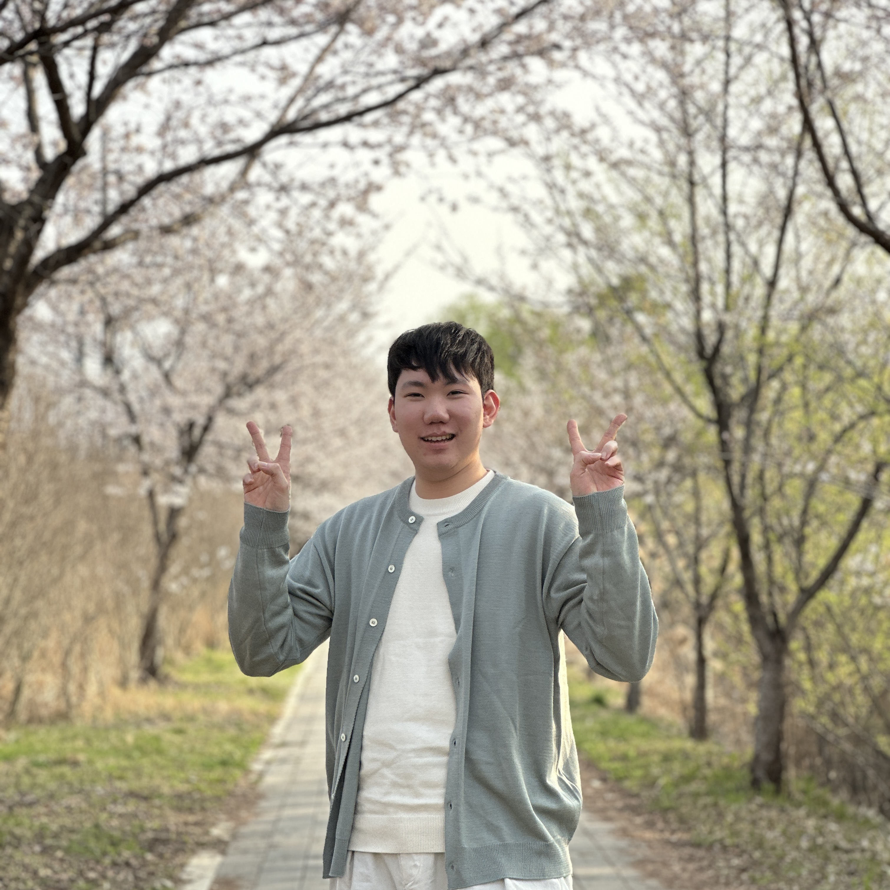

Make practical and powerful Ai

Hi, there!
I'm
ML Research Engineer,
Hoiin Kim
About me
I am currently machine learning research engineer at Blux.
I want to innovate buisness decision making process with machine learning.
interests
-
Recommender System
Sequential Recommendation
Graph Neural Network
Causal Inference -
Business Intelligence
User Lifetime Management
Intelligent push notification
User segmentation -
Development
Backend Engineering
MLOps
Education and Careers
-
Seoul National University
2017 ~ 2023
Bachelor of Economics
(Minor : Computer Science and Engineering) -
Blux
2017 ~ Until now
Machine Learning Research Engineer
Skills
Enthusiastically learn new area and open to use new tools
Programming Skills
Academic Study
- Linear Algebra
- Mathematical Statistics
- Econometrics
- Calculus
Tools
- Visual Studio Code
- Slack
- Figma